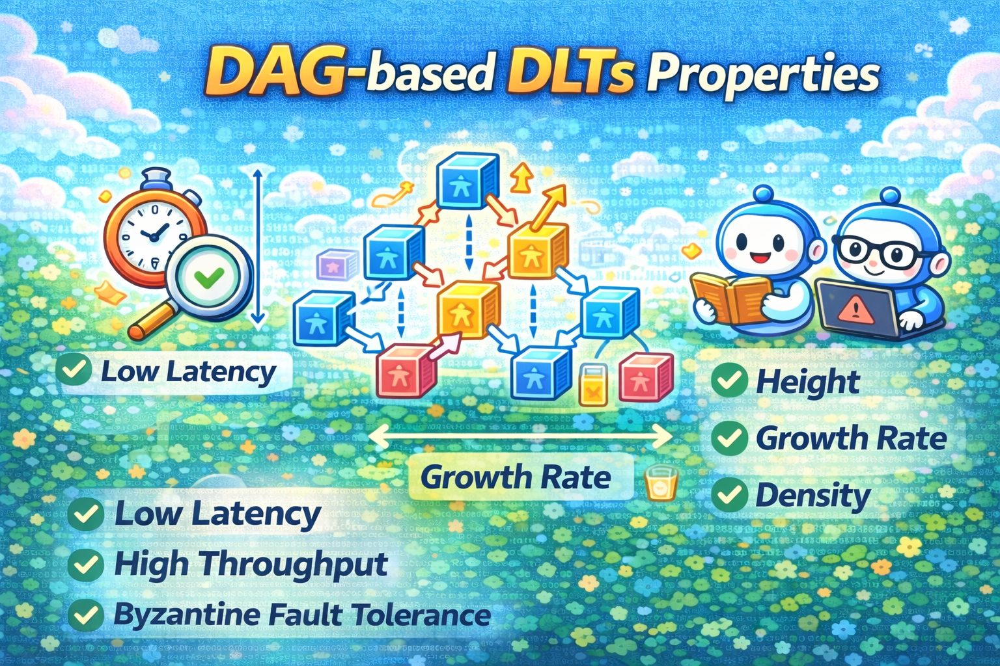
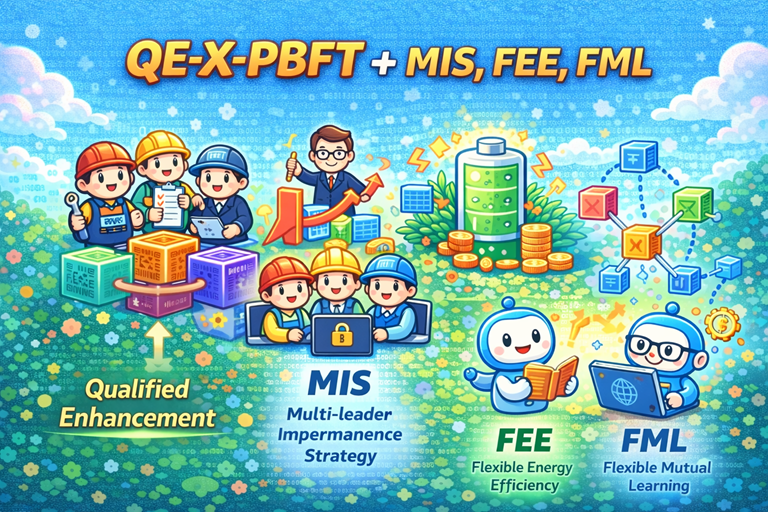
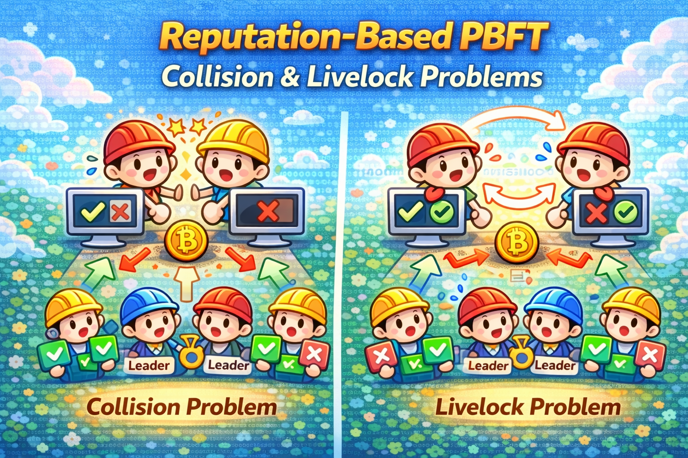
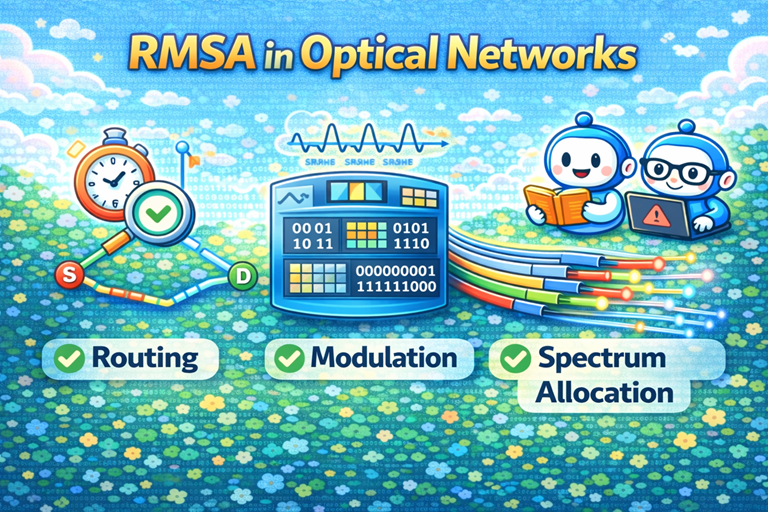
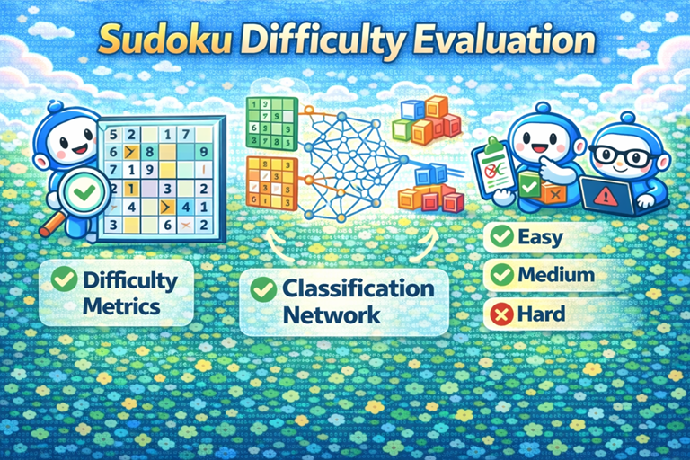
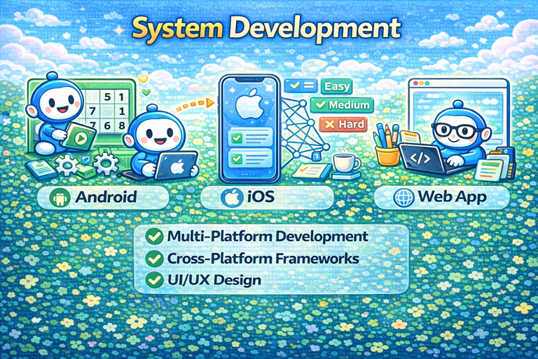

-
Selfish Mining in PoW Blockchains (From 2023)
Collaborators: Prof. Show-Shiow Tzeng, Prof. Li-Chun Wang本研究系統性地探討了自私挖礦（Selfish Mining）在工作量證明（PoW）區塊鏈中的行為特性與安全影響，透過隨機過程與馬可夫鏈模型，精確刻畫自私礦工在不同網路條件與參數設定下的獲利機制。我們進一步分析了多自私礦工、分片架構及輕量化區塊鏈環境中的攻擊效果，揭示傳統安全門檻在實際系統中可能被低估的風險。相關成果不僅提供了自私挖礦可量化、可驗證的分析工具，也為區塊鏈協定設計與防禦機制提供了理論依據。 -
Age of Information in Wireless Networks<（From 2024）/span>
Collaborators: Prof. Show-Shiow TzengProperties of DAG-based DLTs （From 2025）
Collaborators: Prof. Show-Shiow Tzeng, Prof. Li-Chun Wang近年來，以有向無環圖（Directed Acyclic Graph, DAG）為基礎的分散式帳本系統被視為突破傳統區塊鏈可擴展性限制的重要方向。然而，現有多數研究多聚焦於特定協議設計或模擬效能比較，對於 DAG 本身在隨機成長過程中所呈現的結構性屬性，仍缺乏系統化且可解析的理論分析。事實上，DAG 的拓撲演化直接影響交易確認延遲、系統穩定性與安全性評估，其行為不應僅被視為實作細節，而應被視為可被建模與量化的核心研究對象。基於此，我們將 DAG 視為一個隨機動態系統，著重分析其關鍵結構屬性，包括交易高度（height）、成長速率（growth rate）、節點密度（density）以及相關的時間與連結行為指標，並探討這些屬性如何隨交易到達率與確認機制參數而演化。透過嚴謹的數學建模與隨機過程分析，我們的研究旨在提供一個通用且可延伸的分析框架，使 DAG 型分散式帳本系統的效能與穩定性評估能夠建立在可解釋、可比較的結構性基礎之上，而非僅依賴特定實作或經驗性模擬結果。Quality-Aware PBFT Consensus Protocols （From 2025）
Collaborators: Prof. Show-Shiow Tzeng, Prof. Li-Chun WangQE-X-PBFT（Quality-Evaluated X-PBFT）是一個以「節點品質感知（quality awareness）」為核心的拜占庭容錯共識設計框架，旨在修正傳統 PBFT 類協議在實際部署環境中對節點行為與貢獻一視同仁所導致的效率與安全性問題。不同於既有 PBFT 及其變形版本僅依賴靜態成員集合與固定投票門檻，QE-X-PBFT 在共識流程中引入可量化的節點品質指標（例如計算能力、行為可靠度、交易費用貢獻或應用層服務品質），並將其系統性地整合至提案、投票與 view change 決策機制之中。透過品質評估與門檻調整，QE-X-PBFT 能在不破壞 PBFT 安全假設的前提下，有效降低低品質或潛在惡意節點對共識延遲與系統活性的負面影響，同時提升整體決策效率與穩定性。此一設計使 PBFT 類協議得以更適切地應用於節點異質性高度顯著、且對效能與可靠度要求嚴格的實際分散式系統與區塊鏈應用場景。Problems in Reputation-based PBFT Protocols （From 2025）
Collaborators: Prof. Show-Shiow Tzeng, Prof. Li-Chun Wang為提升PBFT類共識在實務環境中的效率與適應性，近年研究開始引入 reputation 機制，藉由節點歷史行為或表現評分來影響 leader 選擇與投票權重。然而，將 reputation 直接整合至 PBFT 流程亦引入新的系統性風險，特別是 collision 與 livelock 兩類問題。所謂 collision，指的是多個高 reputation 節點在 view change 或 leader selection 過程中反覆被選為候選主節點，導致提案衝突或決策資源集中，反而降低共識效率；而 livelock 則表現為系統雖未違反安全性假設，卻因 reputation 分佈僵化或回饋機制設計不當，使共識流程在多次 view change 中反覆循環，長時間無法完成決策。這類問題並非傳統 PBFT 威脅模型下的 Byzantine 行為，而是源自於 reputation 導向設計本身所引發的動態交互效應，現有多數工作仍缺乏對其成因與演化行為的結構化分析。因此，如何在引入 reputation 的同時避免 collision 與 livelock，並維持 PBFT 的安全性與活性，已成為 reputation-based PBFT 設計中亟待正視的核心研究議題。Optical Networks
Collaborators: Prof. Hwa-Chun Lin光纖網路具有高速度、高頻寬的特性。在光纖網路上，光徑是傳輸的一個媒介。而全光式網路則為不經由光電轉換即完成傳輸的一種網路架構。在全光式網路中，光徑所使用的波長必需相同。從起點到終點若找不到一條具有相同可用波長的路徑，則連線無法建立。如何找到路徑及相關的波長使用問題，是我們研究室有興趣的題目。Games
Collaborators: Prof. Show-Shiow TzengSystem Developments
Collaborators: Prof. Show-Shiow Tzeng- Sports Science
Collaborators: Prof. Show-Shiow Tzeng

Dr. Sheng-Wei Wang
王聲葦
swwang@nuu.edu.tw
National United University
Office: B2-504
Google Scholar
[GitHub]